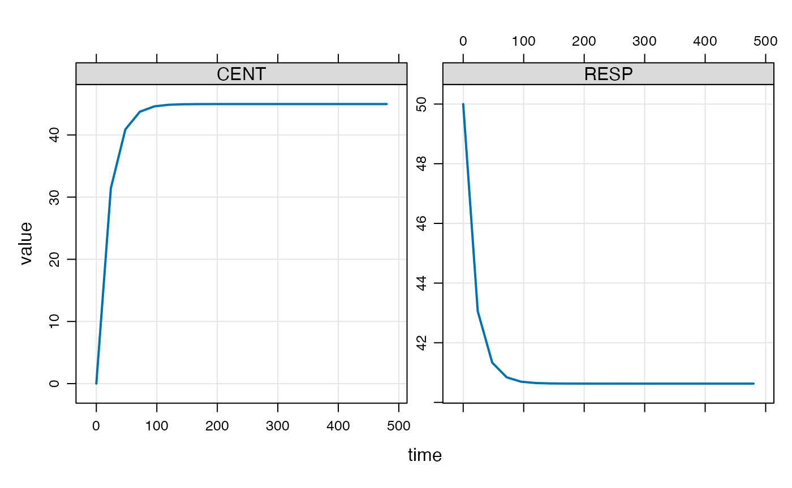

Introduction
When mrgsolve 0.10.0 was released in October, 2019, we
made some changes to how the PK system was advanced to steady state.
This gave better control over the process and more-faithful result. But
it also created opportunities for users to see warning messages that
they hadn’t seen before. Further changes were made in the 0.10.1 release
in February, 2020.
This blog post describes the mechanism by which mrgsolve finds steady state under this new change set (starting late 2019 to early 2020) and describes some of the settings that users can control to their advantage.
tl;dr
- pass
ss_nto put an upper cap on number of doses to give when finding SS - pass
ss_fixedto silence warnings when ss isn’t met - set
ss_cmt(in[ set ]) to include or exclude certain compartments for consideration when finding SS - use
SS_ADVANCElogical flag in[ ode ]to not advance certain compartments when mrgsolve is working to find SS
How does mrgsolve advance the PK system to steady state?
It’s important to recognize that SS is related to the PK
dosing system. It is finding the state of the system after an infinite
number of doses have been administered under a certain regimen. And this
is essentially how mrgsolve goes about finding steady state.
For example
Let’s load a PK model
And let’s imagine a 100 mg QD dosing regimen
dose <- ev(amt = 100, ii = 24)And give that dose a large number of times
dose <- mutate(dose, total = 1000)Let’s just look at trough concentrations and see how the trough develops over the dosing period
mod <- update(mod, delta = 24, end = 24*20, outvars = "CENT, RESP")And simulate that out
out <- mrgsim_e(mod, dose, recsort = 3)
plot(out)
Obviously, the trough concentration starts to increase and after a certain period stops changing
tail(out) . ID time CENT RESP
. 17 1 360 44.97524 40.63012
. 18 1 384 44.97524 40.63012
. 19 1 408 44.97524 40.63012
. 20 1 432 44.97524 40.63012
. 21 1 456 44.97524 40.63012
. 22 1 480 44.97524 40.63012Looking at the compartment amount at the last trough compared to the second to the last trough, the amounts aren’t changing very much. This is how mrgsolve finds steady state: it keeps giving the dose at the dosing interval until the pre-dose concentration stops changing very much.
How close is close enough?
We need some criterion to determine how much change in pre-dose
concentration we’ll tolerate an still call it good enough. mrgsolve uses
the local error estimate for the differential equation solver to
determine this. This is determined by both rtol (the
relative tolerance) and atol (the absolute tolerance). So
once the difference between two trough concentrations is less than
A\(_{trough}\) * rtol +
atol, then the system is said to be at steady state. This
calculation is done for every single compartment in the model and all
compartments have to meet this criteria before the system is said to be
at steady state. So, increasing rtol (say from 1e-8 to
1e-3) will give us less precision in the answer and it will also allow
us to call it “good” with respect to steady state sooner. When using one
of the analytical models (one- and two-compartment models not solved by
ODEs), then changing rtol will have no influence on the
answer (the answer is known in closed form) but will continue to
influence how easily and quickly steady state is achieved.
How many doses?
When the volume is larger, it will take more doses to get to steady
state and more time and work for us to get to that place. Sometimes,
simulated (many doses) to reach steady state. The mrgsim
function has an argument called ss_n. This is the
maximum number of doses that will be given when trying to find steady
state before mrgsolve gives up, issues a warning and keeps going with
the problem. The default value is 500. So, if the system gives 500 doses
and still can’t say that the system is at steady state, it will stop,
issue a warning and keep going with the problem. If you were expecting
the system to reach steady state before 500 doses, then it might be good
to go back and look at the model structure or look at the
parameters.
It might be that just a handful of individuals are taking a very long
time and you’re fine with just cutting them off after the 500th dose. In
that case, you can invoke the ss_fixed argument.
ss_fixed is false by default, ensuring that you will get a
warning message if the system fails to reach steady state. But if you
set ss_fixed to true, then the system will give up
to ss_n doses and stop without warning. So, here
are the possibilities with ss_n equal to 500:
- SS is reached in 10 doses: great! stop after 10 doses and keep going
regardless of whether
ss_fixedis true or false - SS is not reached by the 500th dose and
ss_fixedis false: keep going after issuing a warning that the SS process failed - SS is not reached by the 500th dose and
ss_fixedis true: keep going without issuing a warning
What could possibly go wrong?
Well, you might have seen some warnings come up and wondered why.
Long half-life
Sometimes it happens that you have simulated parameters with very
long half-life and very long time to steady state, even more than 500
doses. It might happen in 1 or 2 out of 3000 simulated individuals and
it will still give the warning. So it might be that you have to set
ss_n to something reasonable and also set
ss_fixed to true so that you don’t get the warnings.
One compartment misbehaves
I have seen this with the dosing compartment when there is a very large inter-dose interval. So the amount gets driven very small, maybe flips sign and the calculations for steady state just don’t work out right to call it “good”. Here’s what you can do:
In your model, you can now give a vector of compartment to not look at for handling steady state:
[ set ] ss_cmt = "-DEPOT"
[ cmt ] DEPOT CENT PERIPH
[ ode ]
dxdt_DEPOT = ...;
dxdt_CENT = ...;
dxdt_PERIPH = ...;The -DEPOT says “forget about the DEPOT compartment when
running up to steady state”; it was giving me numerical problems and I
don’t really care about that one so much either.
AUC compartment in the model
Let’s say you’re accumulating stuff in a compartment for AUC calculation. When you have this in the model, you’ll never make it to steady state according to the definition set out above.
[ set ] ss_cmt = "-AUC"
[ cmt ] DEPOT CENT PERIPH AUC
[ ode ]
dxdt_DEPOT = ...;
dxdt_CENT = ...;
dxdt_PERIPH = ...;
dxdt_AUC = CENT/V;Rather than trying to figure that out under the hood, mrgsolve just
asks you to tell it to forget about the AUC compartment
when determining steady state.
There is another (better) way to handle this. Users have a new
variable that they can check that evaluates to true when
mrgsolve is advancing the system to steady state. So you might write
this:
[ cmt ] DEPOT CENT PERIPH AUC
[ ode ]
dxdt_DEPOT = ...;
dxdt_CENT = ...;
dxdt_PERIPH = ...;
dxdt_AUC = CENT/V;
if(SS_ADVANCE) dxdt_AUC = 0;This will prevent the AUC compartment from advancing at
all when mrgsolve is looking for steady state. And this compartment
won’t be a stumbling block for the SS determination (as described
above).
Only consider a single compartment
Rather than excluding the misbehaving compartment, we can also request that only one compartment be evaluated for SS
[ set ] ss_cmt = "CENT"
[ cmt ] DEPOT CENT PERIPH
[ ode ]
dxdt_DEPOT = ...;
dxdt_CENT = ...;
dxdt_PERIPH = ...;This ignores every compartment except for CENT when
figuring out SS.
Summary
- pass
ss_nto put an upper cap on number of doses to give when finding SS - pass
ss_fixedto silence warnings when ss isn’t met - set
ss_cmt(in[ set ]) to include or exclude certain compartments for consideration when finding SS - use
SS_ADVANCElogical flag in[ ode ]to not advance certain compartments when mrgsolve is working to find SS
Conclusion
I hope this has been helpful to explain steady state concepts in
mrgsolve and you have better control of this process in your modeling
workflow. I do see some additional opportunities potentially coming in
the future, like asking the steady state finder to use a different
rtol than that which is used for solving differential
equations. For the time being, we’ll play with this configuration and
see what additional changes would be helpful.